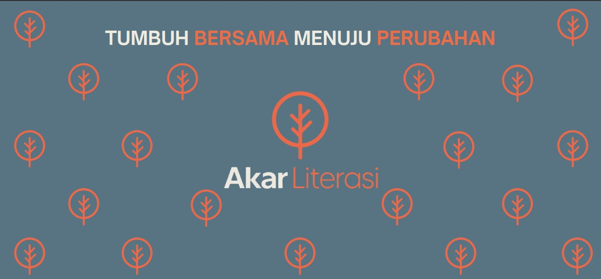
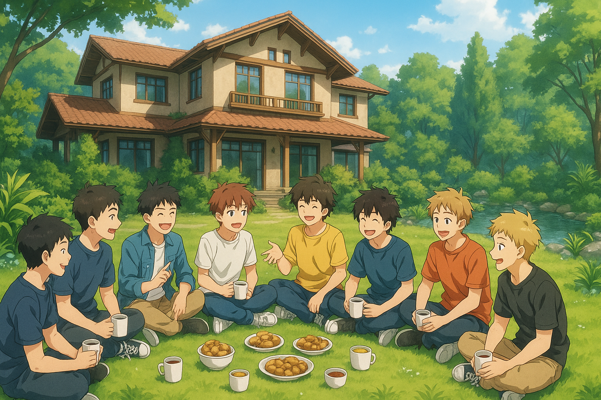
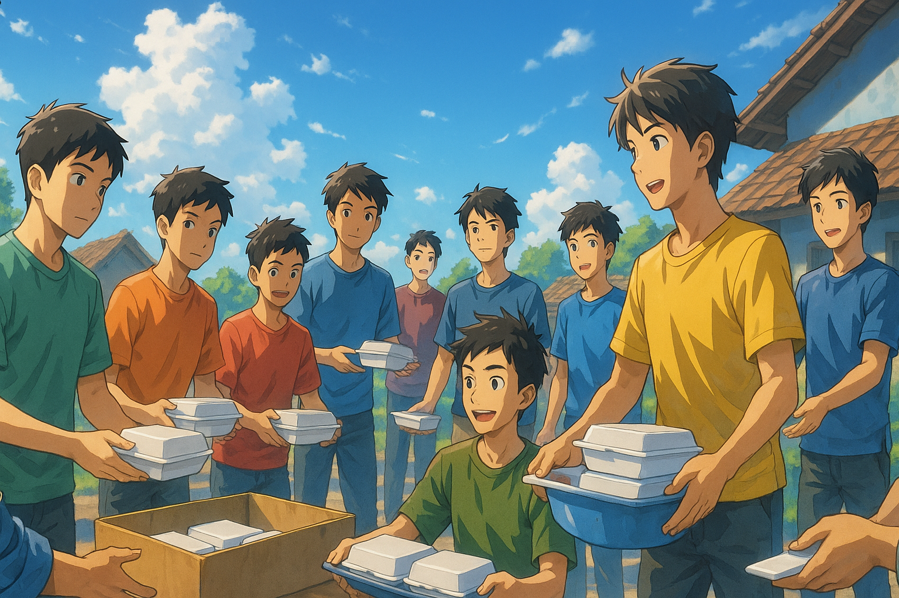

AKAR LITERASI
TUMBUH BERSAMA MENUJU PERUBAHAN
Karena setiap jiwa butuh ruang untuk bertumbuh, dan setiap perubahan besar selalu dimulai dari langkah kecil yang dilakukan bersama.
TENTANG KAMI
LATAR BELAKANG
Akar Literasi Komunitas lahir dari keprihatinan akan minimnya ruang yang mampu menumbuhkan kesadaran spiritual, intelektual, dan emosional generasi muda. Di tengah derasnya arus informasi dan dinamika sosial, banyak anak muda kehilangan arah tercabut dari akar nilai, keimanan, dan makna hidup.
TUJUAN
Akar Literasi Komunitas dibentuk dengan tujuan untuk menguatkan kembali fondasi keimanan dan nilai hidup generasi muda sebagai akar utama pertumbuhan diri yang kokoh. Komunitas ini hadir untuk membangkitkan semangat literasi dalam makna yang luas tidak hanya sebatas kemampuan membaca dan menulis, tetapi juga mencakup kemampuan berpikir kritis, reflektif, dan spiritual. Kami ingin menciptakan ruang yang aman, suportif, dan penuh makna, di mana setiap individu merasa diterima dan didorong untuk berkembang secara utuh baik secara jiwa, akal, maupun tindakan.
PROGRAM

Program-program Akar Literasi dirancang sebagai media pertumbuhan yang menyeluruh—mencakup aspek spiritual, intelektual, emosional, sosial, dan jasmani. Setiap kegiatan dibentuk untuk menumbuhkan kebiasaan baik, melatih kepekaan diri, dan memperkuat fondasi kehidupan yang berakar pada nilai-nilai keimanan dan pencarian ilmu. Melalui ritme aktivitas yang teratur dan berjenjang, komunitas ini mengajak para anggotanya untuk tidak hanya menjadi pribadi yang disiplin, reflektif, dan berpikir kritis, tetapi juga mampu bekerja sama, saling mendukung, dan berbagi makna hidup dalam ruang yang aman dan penuh harapan.
👉 BUKA HALAMAN PROGRAMJEJAK PERJALANAN

Di setiap langkah yang terbingkai, kami belajar menanam harap dengan sabar membiarkan akar menyelusup dalam gelap hingga menemukan cahaya dari dalam tanah iman. Dokumentasi ini adalah catatan perjalanan jiwa-jiwa yang pernah redup, lalu kembali menyala oleh kasih, ilmu, dan ikhtiar bersama. Bukan sekadar foto, tapi saksi akan janji yang kami tanam: bahwa setiap jiwa layak bertumbuh, sejauh mana pun ia pernah terjatuh.
👉 LIHAT GALERI